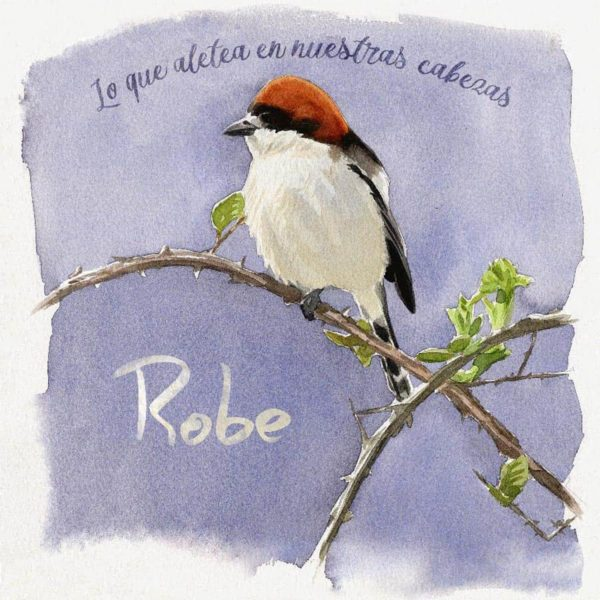

Lo que aletea en nuestras cabezas
-
Un suspiro acompasado
He notado una brisa pasajera Que me ha dicho que, tal vez Si quisiera... Respira, y noto su respiración; Habla, y sueño con su voz Y con ella Aunque ya no esté, tengo mis razones Para ver que hay ocultas conexiones: Si ella baila, yo encuentro una canción Que habla de nosotros dos Quédate en silencio y oye El ruido de mis tripas soñadoras Que sueñan con comerte a todas horas Ruge el deseo contenido Gira, y yo la espero Se va, y a la vida le pierdo el apego Y el juicio recupero Si encuentro un indicio de su paradero Llega el viento mecido Porque acaba de estar contigo Noto en el aire un suspiro Y todo cambia de sentido
-
Y rozar contigo...
¿De qué color su pelo? ¿De qué color la luz? No me acuerdo del cielo, El mar creo que era azul. Azul azul azul azul azul azul azul. Era azul azul azul azul azul azul azul azul. Los recuerdos se fueron, ¿y del tiempo que pasó? Ni recuerdo aquel cielo, Ni tampoco su olor. Que no, que no, que no, que no, que no, que no, que no. Que no, que no, que no, que no, que no, que no, que no, que no, que no. Y rozar contigo Y como, como si se me encendiera alguna luz Al rozar contigo... Y soñar contigo Y como, como si se me encendiera alguna luz Al soñar contigo... Le ordeno a mi corazón que se detenga Tic tac, tic tac, tic tac, tic, tac. Que deje de funcionar, que no la tienta. Dentro del sueño no me obedece el corazón, No soy su dueño. Dentro del sueño no me obedece el corazón, No soy su dueño. Le ordeno a mi corazón que se detenga. Tic tac, tic tac, tic tac, tic, tac.
-
Nana cruel
Duérmete, Que ya estás a salvo de todo, El Sol se ha ido entusiasmado, Le ha salido bien Este atardecer. Duérmete, Que te voy a cantar Una nana tan cruel Como la realidad: Érase una vez Una humanidad. Yo que, yo que pensaba... Yo que creía firmemente en el amor, Hoy ya sé que no, que ya no importa Y que a la vida hay que buscarle otra razón; Y busco en los colores del atardecer Y no la encuentro. Yo que pasaba las noches en negociación... Yo, que te espero. Yo, que hice cada segundo otro mundo mejor... Yo, que te espero. Yo, que velaba las noches enteras... Yo que, yo que querría poder contarte Que ahí afuera está la vida y solo hay gente Que quisiera comprenderte Y abrazarte y alegrarte Y ayudarte siempre. Yo, que estudié al ser humano, te digo Que no, que ya nada espero. Yo, que intenté comprender sus motivos... Que no, que ya nada espero. Yo, que quisiera encontrarme contigo... Yo que, yo que pensaba... Yo que creía firmemente en el amor... No, Hoy ya sé que no, que ya no importa Y que a la vida hay que buscarle otra razón; Y busco en los colores del atardecer Y no la encuentro. Duerme, que ahí afuera Solo hay monstruos, solo hay gente Que te compra y que te vende, Que te odia y que te miente, Que roba, que te mata, Que te viola y que no siente nada. Duérmete, que ya se ha ido el Sol. Que tenía que hacer, dijo, y se marchó, Y prometió volver al amanecer.
-
De manera urgente
Te miré, La sangre de las venas, hervir, Me noté, Y creyó la primavera venir. Me metí En lo más hondo de mi ser Y vi llegar Pensamientos como tormentas. Y si de repente se cayera la luna, Y si de repente no te volviera a ver, De manera urgente caería en la locura Y, de manera urgente, tendrías que volver. Sí, y volver y volver y volver. Sí, y venir y venir y venir. Si me ves Arráncame la piel a tiras. Si me ves No me perdones en la vida. Si me ves Ahogarme dentro de mi mundo, Naufragar Dentro de mí en lo más profundo. Y si de repente se cayera la luna, Y si de repente no te volviera a ver, De manera urgente caería en la locura Y, de manera urgente, tendrías que volver.
-
Por ser un pervertido
Apareciste y, sin razón, Creo que algo me desorientó. Aquí, desprevenido, En manos del destino. Y le estoy buscando explicación: ¿Será el eje de rotación, Que hace que esté torcido El mundo en que vivimos? Yo, sentido de la orientación, Nunca tuve, iba sin dirección. Pero ahora puedo asegurar que estoy Perdido, perdido. Perdido estoy sin ti. Perdido. Pensaba que todo era amor. Pensaba que solo era amor. Lo tengo merecido Por ser un pervertido. Y le estoy buscando explicación Y no la encuentro alrededor. Lo tengo merecido Por ser tan primitivo. Yo, sentido de la orientación, Nunca tuve, iba sin dirección. Pero ahora puedo asegurar que estoy Perdido, perdido. Perdido estoy sin ti. Perdido.
-
Ruptura leve
No pegues un portazo. ¡Fuera! ¡Fuera! ¡Fuera de aquí! Que tengo el temple bajo Y fuera, fuera, Fuera de mí.
-
Guerrero
Como buen guerrero, Para ser sincero, Cuando el cielo está tan azul, Niego que la quiero Y que la echo de menos Y que sueño con su luz. Y soñar que acaricio su pelo, Que su boca me vuelve a buscar, Que el ayer no se fue entre los dedos, Y que hoy sin avisar Se ha vuelto a presentar. Como buen guerrero, Que me importa un bledo Todo lo que no sea luchar Contra el enemigo Que vive conmigo, Hasta hacerle claudicar. Y al compás que se mueven las olas, Ir bailando hasta el amanecer Y apurar hasta la última gota, Por si acaso, después, Nunca te vuelvo a ver. Vente a esta orilla, Que hay marejadilla, Mi amor, Que con el ruido del agua Me sale mejor. Iba oyéndole, iba oyéndole, Iba dándole, iba dándole, Iba oyéndole, iba oyendo el ruido del mar. Iba estándome, iba estándome, Iba haciéndole, iba haciéndole, Iba estándome, no dejando al tiempo pasar. Puede que ni me siente bien Ni me sirva de consuelo, Saber que nunca va a volver Y que solo ha sido un sueño. Del desfiladero, No os voy a dejar pasar. A este matadero, No hemos venido a mirar. Como buen guerrero, Puedo dar la talla; Puedo darlo todo, Pues doy todo por perdido En cada batalla. Y nunca me he rendido, Porque si la pierdo, ¿para qué quiero estar vivo? Como buen guerrero, Solo tengo miedo A que sus ojos dejen De mirar a ver si puedo Llegar al Olimpo Y robar el fuego. Yo no robé del Olimpo Este fuego, mi amor, Fue del infierno, Este invierno, Buscando calor. Sigue ardiéndome, sigue ardiéndome, Crepitándome, crepitándome, Sigue ardiéndome, sí, dentro del corazón. Sigue estándome, tú, sigue estándome, Sigue haciéndome, tú, sigue haciéndome, Sigue estándome, sí, dentro del corazón. Puede que ni me siente bien Ni me sirva de consuelo, Saber que nunca va a volver Y que solo ha sido un sueño. Del desfiladero, No os voy a dejar pasar. Como buen guerrero, Aquí me pienso plantar.
-
Contra todos
Contra todos. Otra vez me levanto contra todos. Si la vida..., me vuelvo a preguntar. Si en la vida me vuelvo a equivocar... Ahora qué, ahora que estoy, que estoy tan solo, Dime, para buscarte, dónde estás, Que yo sé que hay otra manera: Del destino no me dejo llevar. He buscado la vida entera Y he encontrado la forma de escapar: Me salí del camino a caminar. Necesaria. Para mí esta canción es necesaria. Todo el mundo me dice: ¿Para qué, Si ella nunca, ella nunca va a volver? Y por eso les llevo la contraria, Y por eso me vuelvo del revés. Siempre voy a contracorriente, De la noche, el color, yo quiero ver, Y apartarme más de la gente Y alejarme de todo en lo que creen Y olvidar la manera de volver. ¡Ay!, al camino recto, por el más torcido, Vengo directo, ¡ay!, a hablar contigo De nuestros derechos constitutivos. Y a la pálida luz de la luna, Llega una duda; Me pregunta si ya no te espero. Y esta flor, que ya sabes que es tuya, Se descapulla, Recordando el roce de tus pelos. No, que nunca te vuelva a ver, Que no te vuelva a rozar, Decidió el amanecer. Aire, aire que me falta el aire. Aire, que me falta el suelo. Aire, aquí hace falta un trueno. Por ti, la luz de la Aurora Se queja de verte sola, Y ahora llega más temprano. Y a mí, la luz de la luna No quiere dejarme a oscuras, Y me lleva de la mano A abrazarte cuando estoy perdido. Dime dónde estás. Frío, frío, frío. Y lanzarme al vacío. Dime dónde estás. Frío, frío, frío. Incendiario. Todos dicen que soy un incendiario, Que enciendo hogueras solo con hablar Y que morir no me importa y me da igual Hasta el día en que caerá en el calendario. Y es que no me preocupa tropezar Siempre con la misma piedra, De cabeza me tengo que pegar Siempre con la misma piedra. Del pasado nada puedo cambiar, El futuro lo estoy cambiando ya. ¡Ay!, al camino recto, por el más torcido, Vengo derecho, ¡ay!, a hablar contigo De nuestros defectos constitutivos. Y a la pálida luz de la luna, Llega una duda; Me pregunta si ya no te espero. Y esta flor, que ya sabes que es tuya, Se descapulla, Recordando el roce de tus pelos Y abrazarte cuando estoy perdido. Dime dónde estás. Frío, frío, frío. Y lanzarme al vacío. Dime dónde estás. Frío, frío, frío.